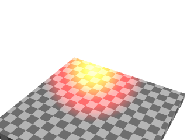
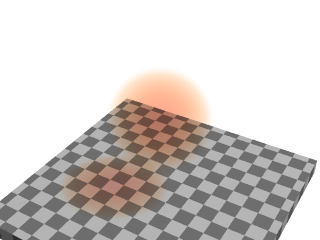
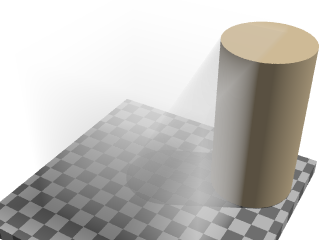
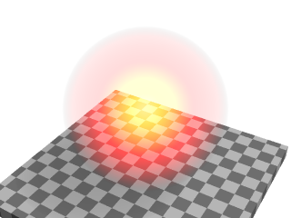
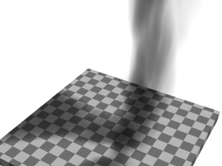
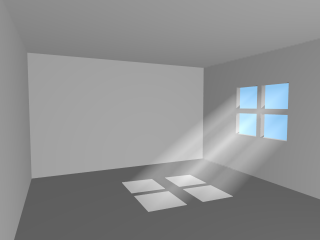
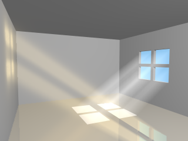

2.3.6 Simple Media Tutorial

|
|
2.3.5 Using Atmospheric Effects |
POV-Ray 3.6 for UNIX documentation 2.3.6 Simple Media Tutorial |
2.3.7 Radiosity |
|
Media in POV-Ray is a very versatile feature and can be used for a very diverse set of special effects such as glows, smoke, dust, fog, etc. However, due to its versatility, media is not one of the easiest and simplest features of POV-Ray and often requires experience for getting things to look good.
There are three types of media in POV-Ray: Emitting, absorbing and scattering. They have the following properties:
light_source does; this just describes how it affects the rays going through
it). That is, the color of the media is added to the color of the ray passing through it. Light sources do not have
any effect at all in it (ie. it does not affect shadows in any way).
Emitting and absorbing medias are the simplest and thus fastest ones. Emitting media can be used for things like
glows, lasers, sparkles and similar light-emitting effects. Absorbing media can be used for things like smoke and fog
(the difference between the fog feature of POV-Ray is that the density of an absorbing media can be
modified by a pattern and the media can be contained inside an object).
Scattering media is the more advanced and slower type. It is somewhat similar to absorbing media except that it is fully lit by light sources. This can be used for smoke or fog with visible lightbeams and shadows.
Media can be global to the whole universe, or it can be contained by an object. In the latter case the media is
defined in the interior block of the object definition.
For an object to be able to contain media (or to allow media from other objects or the global media inside itself)
it has to be defined as hollow (a common mistake is to forget adding this keyword). If an object with no
media should not allow media inside itself (eg. a solid glass ball), then hollow should not be defined
for that object.
If media is defined in the interior of an object or as a global media it will have a constant density
throughout the object/universe. However, a density pattern can be specified for non-uniform media. Also all kinds of
transformations can be applied to the media. This is specially useful for various effects (such as smoke with certain
shape).
Let's start with a very simple scene showing an emitting media using a spherical density map. Emitting media is
used with the emission keyword followed by a color value. This color value tells the overall color of the
media:
global_settings { assumed_gamma 1 }
background { rgb 1 }
camera { location <3,4,-5>*.8 look_at 0 angle 35 }
light_source { <20,40,10>, 1 }
box // floor
{ <-1.5,-1.01,-1.5>, <1.5,-1.2,1.5>
pigment { checker rgb 0.75, rgb 0.25 scale 0.2 }
}
sphere // transparent sphere containing media
{ 0,1 pigment { rgbt 1 } hollow
interior
{ media
{ emission 1
density
{ spherical density_map
{ [0 rgb 0]
[0.4 rgb <1,0,0>]
[0.8 rgb <1,1,0>]
[1 rgb 1]
}
}
}
}
}
Note that the spherical pattern gets values from 0 in the outer surface of a unit sphere to 1 in the
origin (that is, the density with the index value 1 will be the density at the center of the media).
The color values in the density map tell what color the media is emitting at a certain point in the pattern. That
is, for example when the pattern gets the value 0.4, the media will be completely red at that place. If the color is <0,0,0>,
it means that the media does not emit any light at all in that location.
Note that the density map colors are multiplied by the color given with the emission keyword; since 1
is used in this case, the density map colors are not affected.
Thus, this will give us a media with a bright white center which fades to yellow and red at the outer limits of the unit sphere:

As you can see from the image, the emitting media is invisible against white background. This is due to its additive nature (any color added to pure white gives pure white). In fact, emitting media gives usually best results for dark backgrounds.
Modifying the previous example to use absorbing media is rather simple: Simply change the emission
keyword for absorption. However, the colors we used above are not very illustrative for absorbing media,
so let's change them a bit like this:
media
{ absorption 1
density
{ spherical density_map
{ [0 rgb 0]
[0.4 rgb 0]
[0.5 rgb <0,0.5,1>]
[1 rgb <0,1,1>]
}
}
}

The feature which we immediately notice in the image is that the media seems to be inverted from the colors
specified in the density map: Blueish colors were specified in the map, but the image shows a reddish media. This is
perfectly normal and to be expected from the substractive nature of absorbing media: The media actually absorbs the
colors we specified in the density map. This means that for example specifying a white color (<1,1,1>)
in the density map will absorb all colors, thus resulting in a dark media.
Note how this media has a shadow: light rays passing through the media are absorbed.
Because of its substractive nature, absorbing media works well with light backgrounds and not very well with dark ones.
Since scattering media fully takes light sources into account we need to make a slightly more complex scene to see this. Let's modify the above example by replacing the sphere with a box containing evenly distributed scattering media, and a cylinder which will cast a shadow onto the media:
box
{ -1,1 pigment { rgbt 1 } hollow
interior
{ media
{ scattering { 1, 0.5 }
}
}
}
cylinder
{ <0.9, -1, 0.7>, <0.9, 0.9, 0.7>, 0.5
pigment { rgb <1, 0.8, 0.5> }
}

(The effect may look a bit unnatural for a fog effect because the media is contained inside a box and the cylinder is partially out of this box, but this is done to better visualize what is happening.)
The scattering keyword takes more parameters than the other two. The first number inside the curly
brackets is the scattering media type. In this example we used scattering media type 1. A full list of scattering
media types is given in the section scattering of the Media
reference.
The second parameter is the overall color of the media, similar to the parameter of the other two media types.
An optional third parameter can be given with the extinction keyword inside the curly brackets. This
keyword controls how fast the scattering media absorbs light and has to be used sometimes to get the desired effect,
such as when the media absorbs too much light.
Tip: If you are getting a really dense or dark scattering media, try different values for the color and the extinction value (usually values between 0 and 1). It is usually enough to play with these two values to get the desired effect.
Emitting media works well with dark backgrounds. Absorbing media works well for light backgrounds. But what if we want a media which works with both type of backgrounds?
One solution for this is to use both types of medias inside the same object. This is possible in POV-Ray.
Let's take the very first example, which did not work well with the white background, and add a slightly absorbing media to the sphere:
sphere
{ 0,1 pigment { rgbt 1 } hollow
interior
{ media
{ emission 1
density
{ spherical density_map
{ [0 rgb 0]
[0.4 rgb <1,0,0>]
[0.8 rgb <1,1,0>]
[1 rgb 1]
}
}
}
media
{ absorption 0.2
}
}
}
This will make the sphere not only add light to the rays passing through it, but also substract.

Multiple medias in the same object can be used for several other effects as well.
The density of a media can be modified with any pattern modifier, such as turbulence, scale, etc. This is a very powerful tool for making diverse effects.
As an example, let's make an absorbing media which looks like smoke. For this we take the absorbing media example and modify the sphere like this:
sphere
{ 0,1.5 pigment { rgbt 1 } hollow
interior
{ media
{ absorption 7
density
{ spherical density_map
{ [0 rgb 0]
[0.5 rgb 0]
[0.7 rgb .5]
[1 rgb 1]
}
scale 1/2
warp { turbulence 0.5 }
scale 2
}
}
}
scale <1.5,6,1.5> translate y
}

A couple of notes:
The radius of the sphere is now a bit bigger than 1 because the turbulented pattern tends to take more space.
The absorption color can be larger than 1, making the absorption stronger and the smoke darker.
Note: When you scale an object containing media the media density is not scaled accordingly. This means that if you for example scale a container object larger the rays will pass through more media than before, giving a stronger result. If you want to keep the same media effect with the larger object, you will need to divide the color of the media by the scaling amount.
The question of whether the program should scale the density of the media with the object is a question of interpretation: For example, if you have a glass of colored water, a larger glass of colored water will be more colored because the light travels a larger distance. This is how POV-Ray behaves. Sometimes, however, the object needs to be scaled so that the media does not change; in this case the media color needs to be scaled inversely.
For a bit more advanced example of scattering media, let's make a room with a window and a light source illuminating from outside the room. The room contains scattering media, thus making the light beam coming through the window visible.
global_settings { assumed_gamma 1 }
camera { location <14.9, 1, -8> look_at -z angle 70 }
light_source { <10,100,150>, 1 }
background { rgb <0.3, 0.6, 0.9> }
// A dim light source inside the room which does not
// interact with media so that we can see the room:
light_source { <14, -5, 2>, 0.5 media_interaction off }
// Room
union
{ difference
{ box { <-11, -7, -11>, <16, 7, 10.5> }
box { <-10, -6, -10>, <15, 6, 10> }
box { <-4, -2, 9.9>, <2, 3, 10.6> }
}
box { <-1.25, -2, 10>, <-0.75, 3, 10.5> }
box { <-4, 0.25, 10>, <2, 0.75, 10.5> }
pigment { rgb 1 }
}
// Scattering media box:
box
{ <-5, -6.5, -10.5>, <3, 6.5, 10.25>
pigment { rgbt 1 } hollow
interior
{ media
{ scattering { 1, 0.07 extinction 0.01 }
samples 30,100
}
}
}

As suggested previously, the scattering color and extinction values were adjusted until the image looked good. In this kind of scene usually very small values are needed.
Note how the container box is quite smaller than the room itself. Container boxes should always be sized as
minimally as possible. If the box were as big as the room much higher values for samples would be needed
for a good result, thus resulting in a much slower rendering.
The photon mapping technique can be used in POV-Ray for making stunningly beautiful images with light reflecting
and refracting from objects. By default, however, reflected and refracted light does not affect media. Making photons
interact with media can be turned on with the media keyword in the photons block inside global_settings.
To visualize this, let's make the floor of our room reflective so that it will reflect the beam of light coming from the window.
Firstly, due to how photons work, we need to specify photons { pass_through } in our scattering media
container box so that photons will pass through its surfaces.
Secondly, we will want to turn photons off for our fill-light since it's there only for us to see the interior of
the room and not for the actual lighting effect. This can be done by specifying photons { reflection off }
in that light source.
Thirdly, we need to set up the photons and add a reflective floor to the room. Let's make the reflection colored for extra effect:
global_settings
{ photons
{ count 20000
media 100
}
}
// Reflective floor:
box
{ <-10, -5.99, -10>, <15, -6, 10>
pigment { rgb 1 }
finish { reflection <0.5, 0.4, 0.2> }
photons { target reflection on }
}

With all these fancy effects the render times start becoming quite high, but unfortunately this is a price which has to be paid for such effects.
|
|
2.3.5 Using Atmospheric Effects | 2.3.6 Simple Media Tutorial | 2.3.7 Radiosity |
|